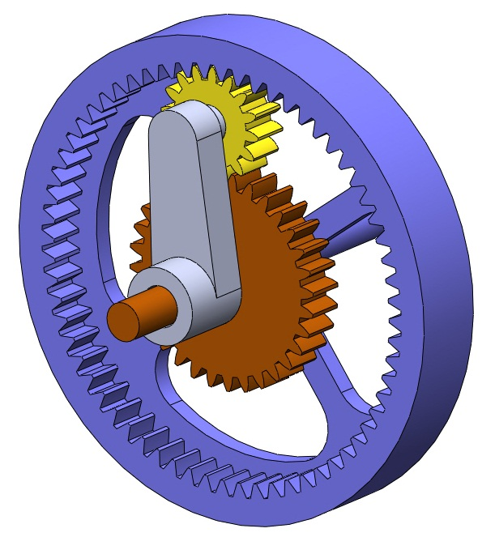
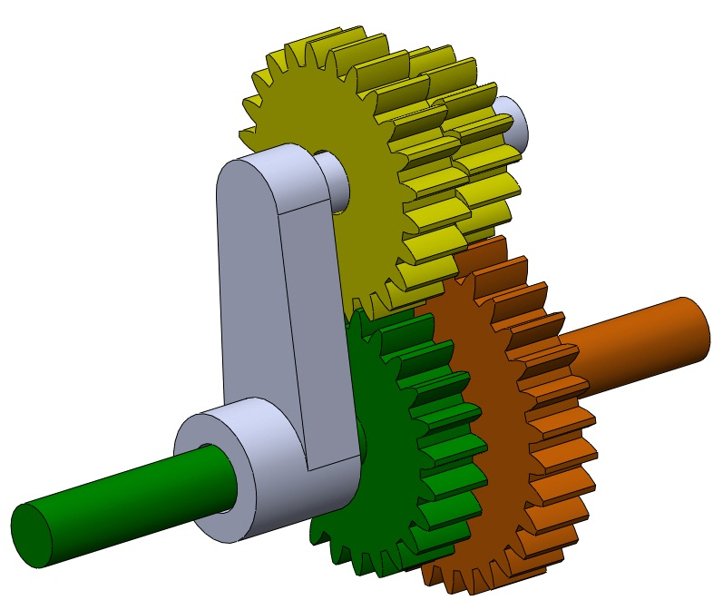
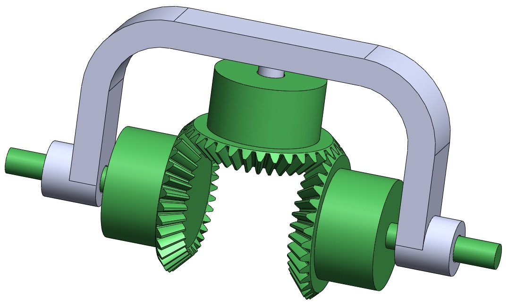

Types of Planetary Gearsets
Zoltan Levai[1] described a total of 34 different types of planetary gearsets that can be constructed; of these, only a few are used in practice. A few of the more common ones are shown in the sections below. The twelve illustrated by Norton[2] are shown on the Planetary Oddities page. For clarity, only one planet gear is shown for each type; more planets can be added as Balancing Gears and to increase the torque capacity of the gearset.
Sun, Ring, and Planet


The most basic type of planetary gearset is shown in the figures above. The figure at left shows a three-dimensional view, while the figure at right provides a cross-section. In this geartrain, inputs and outputs can be taken from the carrier, ring, and sun gears, and only the planet experiences epicyclic motion. This is the most common type of planetary gearset (with the exception of the differential), and it finds application in speed reducers and automatic transmissions. If you take apart a cordless drill, you'll probably find this type of planetary gearset right behind the drill chuck.
Two Suns, Two Planets


The gearset shown above has two sun gears, and the two planet gears (the yellow gears) rotate as a single unit. The sun gears (green and brown) can rotate independently of one another. The inputs and output can be selected from either sun gear and/or the carrier. Very high speed reductions can be achieved with this unit, but it can suffer from low efficiency if not designed correctly.
The animations above show the "two suns — two planets" gearset with one sun as input and the other sun fixed. Note that the carrier rotates clockwise in the animation at left and counterclockwise in the animation at right — despite the fact that the sun rotates counterclockwise in both cases.
The Differential

The gearset shown above is different from the preceding gearsets in that it is composed of miter gears rather than spur (or helical) gears. The "sun" gears are those that do not undergo the epicyclic motion experienced by the planets. The differential can be used to measure the difference in speed between two shafts for the purpose of synchronization. In addition, the differential is often used in automotive drivetrains to overcome the difference in wheel speed when a car goes around a corner.
The sun/ring/planet and differential are the two most commonly encountered planetary gearsets in practice. To see some more unusual types, visit Planetary Oddities.